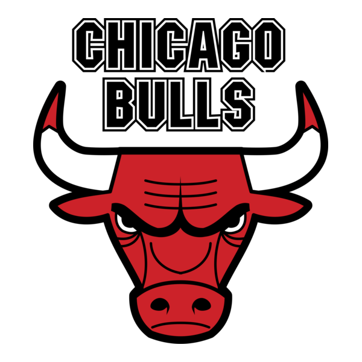

The NBA consists of 30 teams divided into two conferences: Eastern and Western. Each conference has three divisions, and every team has a unique history, culture, and style of play. From historic franchises like the Los Angeles Lakers and Boston Celtics to rising teams like the Oklahoma City Thunder, every organization contributes to the league’s story.
Los Angeles Lakers

One of the most famous franchises in sports, the Lakers are known for legends like Kobe Bryant, Magic Johnson, and LeBron James. Their championship history and Hollywood atmosphere make them a global brand.
Golden State Warriors

The Warriors became a modern dynasty with stars like Stephen Curry, Klay Thompson, and Draymond Green. Their fast-paced, three-point shooting revolutionized basketball.
Chicago Bulls
Driven by the legacy of Michael Jordan, the Bulls remain one of the most iconic franchises. Their 1990s dominance shaped the NBA’s worldwide popularity.